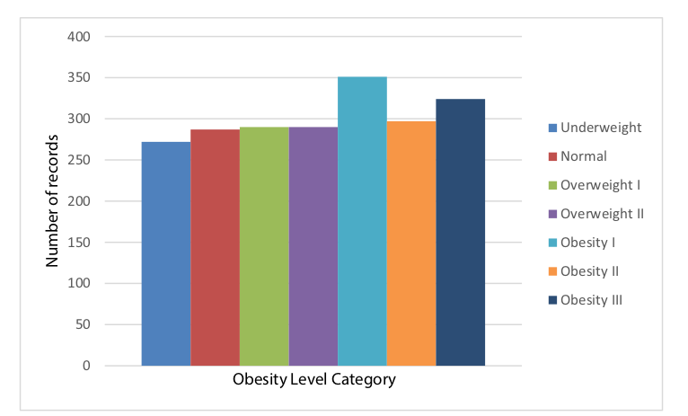
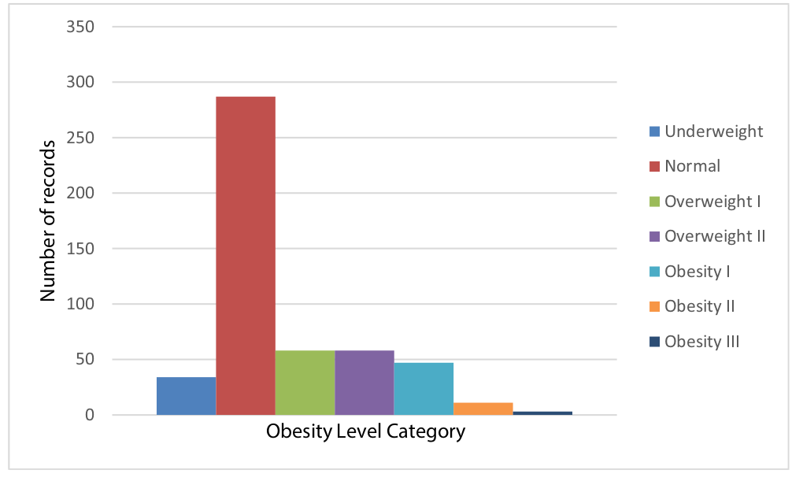

We are using one data source for this project, presented in the research paper Palechor et al. 2019, that monitors the physical health of individuals of ages 14 to 61 from the countries of Mexico, Peru and Colombia, based on their eating habits, physical condition and obesity levels. The dataset contains 17 attributes and 2111 records, and it is the biggest (in terms of both the number of rows and columns) dataset that we could find on obesity and physical health. The 17 attributes are as follows:
Gender
Age
Height
Weight
Family history with overweight (family_history_with_overweight)
Frequent consumption of high caloric food (FAVC)
Frequency of consumption of vegetables (FCVC)
Number of main meals (NCP)
Consumption of food between meals (CAEC)
SMOKE
Consumption of water daily (CH2O)
Calories consumption monitoring (SCC)
Physical activity frequency (FAF)
Time using technology devices (TUE)
Consumption of alcohol (CALC)
Transportation used (MTRANS)
Obesity category level (NObeyesdad)
2.1.2 Dealing with class imbalance
485 rows (or 23%) of this data was collected using an online survey that was made available online for a period of 30 days (exact dates not specified), and the researchers generated the remaining 77% synthetically in order to balance out the categories of obesity levels. It is understandable that the researchers had to generate synthetic data as the categories naturally will suffer from a huge imbalance favoring people of normal weight. Obesity levels are calculated based on the person’s Body Mass Index (BMI), given by the following formula \(\frac{weight}{height*height}\). The categories of the obesity level are fixed by the World Health Organization, as follows:
Obesity level category
BMI
Underweight
Less than 18.5
Normal
18.5 to 24.9
Overweight
25.0 to 29.9
Obesity I
30.0 to 34.9
Obesity II
35.0 to 39.9
Obesity III
Higher than 40
A person’s BMI is normally distributed, which explains why there are many more instances of people in a healthy health range as compared to other obesity level categories. By synthesizing more data for minority categories, the researchers pre-empt the fact that class imbalances will cause learning problems in the data mining methods and also difficulties when doing exploratory data analysis on this dataset. The researchers used an advanced technique to generate this data, the Synthetic Minority Oversampling TEchnique (SMOTE) technique developed by Chawla et. al 2002 has shown to achieve superior results on classification tasks as compared to the typical method of simply oversampling minorities as it generates new synthetic minority data using the k-nearest neighbors machine learning algorithm. The SMOTE algorithm that was described in the paper can also be found in the Annex, Chapter 6 of this report.
 
These are the reasons why our team chose this obesity dataset in particular: it not only provides a large range of metrics associated with a person’s health that are generally correlated with obesity for us to analyze, but also addresses class imbalances in a reliable way.
We plan to import the data directly into RStudio using the readfile function.
2.1.3 Dealing with duplicate rows
The dataset contains a few duplicate rows, which could be attributed to the SMOTE algorithm. We decided to keep most of these duplicates as they are present in a very small number (2) except for one which had 15 duplicates
2.1.4 Need for new columns
We included a new 18th attribute, BMI, so as to be able to do a regression analysis as the BMI (numerical data) provides more information than the obesity category level (categorical data).
2.2 Research plan
We intend to explore the health factors that are the most correlated with a person’s BMI or obesity level and visualize them. In the 17 attributes of our dataset, there are 5 categorical binary variables, 4 multicategorical variables and 8 continuous variables. We intend on using the techniques seen in class, such as scatter plots and boxplots, to explore this dataset.
From these correlations, we will be able to draw some conclusions about the people who are the most at risk of becoming obese.
2.3 Missing value analysis
The data has been preprocessed by Palechor et al. prior to applying the SMOTE filter, as missing/anomalous data will propagate errors in the synthetic data. The researchers mentioned identifying atypical and missing data in their paper, but they unfortunately did not specify exactly how much data was missing or anomalous, neither did they mention how did they remedy the problem (e.g. using correlations between the different columns of the datasets). It is also unfortunate that the researchers did not clearly indicate which rows of the dataset were synthetically generated, and which rows were collected from the online survey, neither did they make the original raw dataset open source. Nevertheless, we appreciate the robustness and completeness of this dataset.
Code
library(readr)library(ggplot2)library(reshape2)data<-read_csv("materials/ObesityDataSet_raw_and_data_sinthetic.csv",show_col_types =FALSE)missing_values <-is.na(data)# Reshape data for heatmaplong_data <-melt(missing_values, varnames =c("Variable", "Observation"))# Create the heatmapggplot(long_data, aes(x = Variable, y = Observation, fill = value)) +geom_tile() +scale_fill_manual(values =c("TRUE"="red", "FALSE"="lightgreen"), name ="Missing", labels =c("No", "Yes")) +theme_minimal() +theme(axis.text.x =element_text(angle =45, hjust =1),axis.title =element_blank())